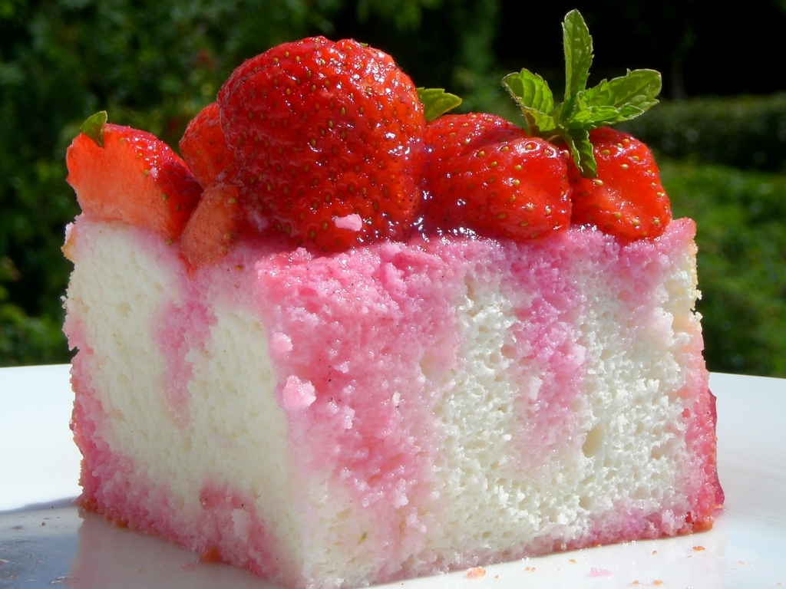

Fluffy, Airy, Light Angel Cake
Angel Cake
This recipe was made by Sally McKenny and can be found on: https://sallysbakingaddiction.com/angel-food-cake/

Ingredients
- 1 and 3/4 cups (350g) granulated sugar
- 1 cup + 2 Tablespoons (133g) cake flour (spooned & leveled)
- 1/4 teaspoon salt
- 12 large egg whites, at room temperature*
- 1 and 1/2 teaspoons cream of tartar
- 1 and 1/2 teaspoons pure vanilla extract
Equipment
- Blender or Food Processor
- Electric Mixer
- Egg Separator
- Fine Mesh Sieve
- Silicone Spatula
- Tube Pan
- Cooling Rack
Directions
- Adjust the oven rack to the lower middle position and preheat oven to 325F .
- In a food processor or blender, pulse the sugar until fine and powdery. Remove 1 cup and set aside to use in step 3; keep the rest inside the food processor. Add the cake flour and salt to the food processor. Pulse 5-10 times until sugar/flour/salt mixture is aerated and light.
- In a large bowl using a hand mixer or a stand mixer fitted with a whisk attachment, whip egg whites and cream of tartar together on medium-low until foamy, about 1 minute. Switch to medium-high and slowly add the 1 cup of sugar you set aside. Whip until soft peaks form, about 5-6 minutes. See photo and video above for a visual. Add the vanilla extract, then beat just until incorporated.
- In 3 additions, slowly sift the flour mixture into the egg white mixture using a fine mesh strainer, gently folding with a rubber spatula after each addition. To avoid deflating or a dense cake, don’t add the flour mixture all at once. Sift and very slowly fold in several additions. This is important! Pour and spread batter into an ungreased 9 or 10 inch tube pan. Shimmy the pan on the counter to smooth down the surface.
- Bake the cake until a toothpick inserted comes out clean, about 40-45 minutes. Rotate the pan halfway through baking. The cake will rise up very tall while baking. Remove from the oven, then cool the cake completely upside-down set on a wire rack, about 3 hours. (Upside-down so the bottom of the tube pan is right-side up, see photo and video above.) Once cooled, run a thin knife around the edges and gently tap the pan on the counter until the cake releases.
- If desired, dust with confectioners’ sugar. Slice the cake with a sharp serrated knife. Regular knives can easily squish the cake. Serve with whipped cream and fresh berries.
This page created as academic activity only.